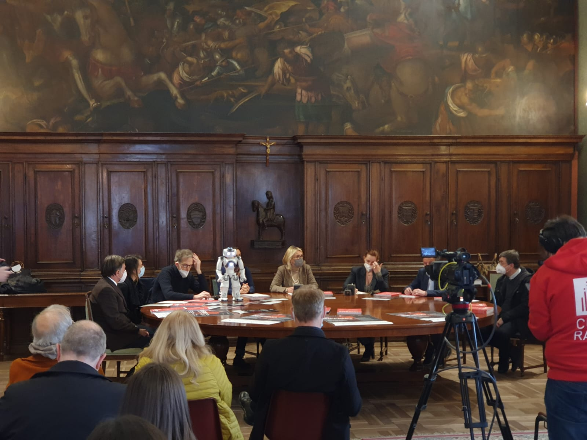
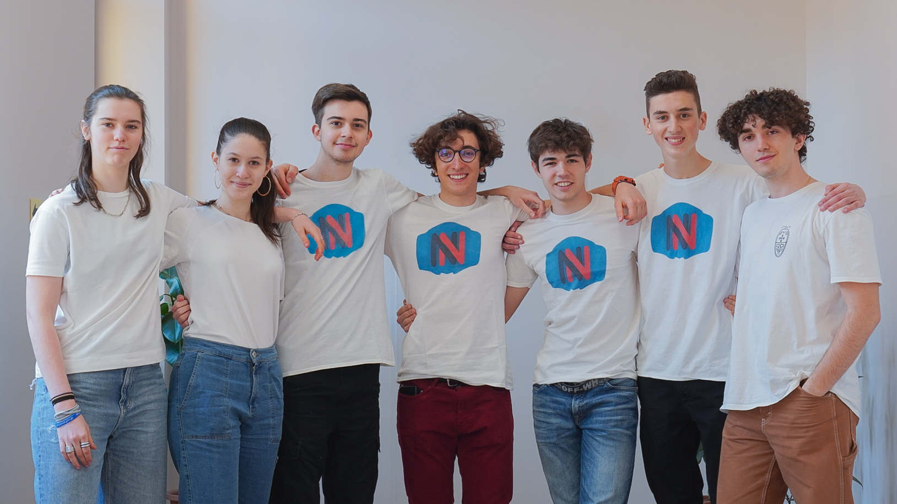

L’Associazione Rivela e il Team NaoNexus stanno collaborando per dar vita ad un interessante progetto. I 7 ragazzi del team hanno lavorato insieme per mesi, trasformando Nao in una vera e propria guida che si destreggerà nell’esporre le opere della mostra e guidare i visitatori.
Questo Progetto (il quale verrà poi presentato anche alla NaoChallenge) permetterà a Nao di fondere arte e scienza in una maniera unica e nuova, rivoluzionando l’esperienza che la mostra “Il mio Inferno: Dante poeta di speranza” può offrire.
Nell’ultima settimana di aprile si svolgeranno le semifinali. La squadra sarà chiamata a dirigere una diretta insieme a Nao per presentare il loro progetto e la collaborazione con l’Associazione.
Progetto
La mostra “Il mio inferno. Dante profeta di speranza” si svolgerà dal 29 marzo al 29 maggio 2022 nel Bastione delle Maddalene e sarà un evento unico dedicato al Sommo Poeta, il quale trovò rifugio nella nostra amata città durante il suo esilio. Sarà un viaggio multisensoriale con immagini, video e suoni, raccontato dagli studenti del triennio delle superiori (accompagnati da guide e tutor dell’Associazione Rivela). Ospite d’eccezione è NAO, robot umanoide che grazie al team NaoNexus si è trasformato in una guida comparabile agli studenti presenti alla mostra. L’evento si avvale dei contributi fondamentali del professore Franco Nembrini (saggista e pedagogista) e Gabriele Dell’Otto (fumettista e illustratore) la cui collaborazione ha permesso di raccontare l’Inferno dantessco del saggista tramite le illustrazioni dell’artista.
L’esposizione si sviluppa su una superficie di 500 metri quadri, tra i tunnel e i cunicoli del Bastione delle Maddalene. Il percorso è fatto da 35 tappe, scandite da illustrazioni accompagnate da approfondimenti e riflessioni. Parte integrante dell’evento è l’opera “El Dante”, realizzata dallo scultore Adelfo Galli. Nao assisterà i visitatori ed interagirà con loro per mezzo di un’applicazione ideata dal team, la quale permetterà al robot di guidarli e presentare loro le 8 opere esposte in base alle richieste ricevute. Nao sarà in grado di guidare i visitatori alle opere selezionate grazie ai “Nao Marker”, cartellini posizionati al di sotto di ogni opera. Grazie ai sensori di riconoscimento visivo e la telecamera posizionati sul capo del robottino, esso è in grado di riconoscere il simbolo presente su ognuno dei Nao Marker e di dirigersi di conseguenza verso l’opera scelta. Una volta terminato il suo compito, quest’ultimo tornerà alla postazione di partenza dove aspetterà nuove richieste.

Nao ha preso parte alla conferenza stampa organizzata in comune presentando il progetto ad un’assemblea di spessore. L’Assessore regionale alla cultura, i professori Nembrini, il preside Umberto Fasol e alcuni membri dell’Associazione Rivela sono stati i primi a venire a conoscenza di questo entusiasmante progetto e di tutte le sue sfumature. Inoltre il robot ha fatto la sua apparizione anche sulle quinte del teatro Camploy, presentando al pubblico il NaoNexus Team e quello che ha da proporre.
Nell’ultima settimana di aprile si svolgeranno le semifinali. La squadra sarà chiamata a dirigere una diretta insieme a Nao per presentare il loro progetto e la collaborazione, richiesta dalla gara, nella quale l’intelligenza artificiale verrà applicata per aiutare l’uomo. Tale collaborazione verrà presentata la sera del 29 marzo.
Il giornale "Arena" inoltre ha dedicato un articolo al team NaoNexus annunciando la collaborazione con l'associazione Rivela, nel presentare le opere d'arte dell'inferno di Dante
Team

Il NaoNexus team è composto da un gruppo di 7 ragazzi del triennio della scuola Alle Stimate di Verona. Riccardo Antonelli, Francesco Albertini, Francesco Bernardi, Elisa D’Iseppi, Alberto Rubini, Anna Veronesi ed Emanuele Viani sono i protagonisti della NaoChallenge 2022. Questo affiatato gruppo è stato in grado di rispondere alle richieste dell’Associazione Rivela e di sviluppare insieme il progetto che vedrà come protagonista Nao all’interno della mostra “Il mio Infero, Dante profeta di Speranza”. I ragazzi si sono divisi in due gruppi che collaborano tra loro: quello social e quello programmazione. Insieme hanno interagito per mesi in un clima sereno, competitivo e inclusivo, spronandosi a vicenda per raggiungere i loro obbiettivi. I ragazzi hanno alte aspettative per questa challenge e puntano alla vittoria, anche se vivere un’esperienza così arricchente è già una grandissimo premio.
Albertini Francesco
Francesco Albertini ha 18 anni ed è uno dei programmatori Choreographe del nostro team. Francesco si occupa di gestire i movimenti del Nao e di programmare il suo comportamento . Francesco è un ragazzo molto preciso e cooperativo, sempre pronto a dare delle dritte ai suoi compagni programmatori.
Antonelli Riccardo
Riccardo Antonelli, 17 anni, si occupa di programmare l’applicazione con cui l’utente si interfaccerà alla mostra di Dante. Riccardo ha partecipato alla NaoChallenge dell’anno scorso e si è distinto per la sua tenacia e perseveranza nella creazione dei programmi.
Bernardi Francesco
Francesco Bernardi, programmatore del nostro team, diventerà maggiorenne quest’anno e assieme a Riccardo si è occupato di creare l’applicazione per la mostra. Francesco si è fatto conoscere per la sua abilità nel trovare soluzioni alternative ai problemi più difficili e alla sua versatilità.
Viani Emanuele
Emanuele Viani è uno dei programmatori del team e ha 19 anni. Assieme a Francesco Albertini gestisce i comportamenti e i movimenti del Nao, interessandosi allo stesso tempo al lavoro degli altri coder e aiutandoli durante il percorso. Emanuele, ragazzo pacato, è conosciuto per la sua intraprendenza e curiosità.
Rubini Alberto
Alberto Rubini, di 17 anni, è fotografo e regista della squadra. Grazie allo studio di questa materia è in grado di creare scatti sempre freschi e naturali e di riprendere al meglio l’essenza dei ragazzi del team. Alberto è un ragazzo determinato e molto creativo, sempre pronto a dare vita a nuove idee.
Veronesi Anna
Anna Veronesi deve compiere 18 anni e anche lei fa parte del gruppo social media del team. Assieme ad Elisa gestisce le pagine social e grazie alla sua passione per l’arte e il disegno riesce a dare vita alle foto scattate, conferendogli carattere. Anna è uno spirito libero capace di creare meraviglie con solo una penna.
D’Iseppi Elisa
Elisa D’Iseppi compirà tra poco 18 anni e fa parte del gruppo social media del NaoNexus Team. Assieme ai suoi colleghi Elisa cerca di trovare soluzioni innovative per esprimere al meglio il percorso che la squadra sta facendo in questi mesi. E’ una ragazza decisa e tenace e cerca sempre di dare il suo contributo.
Bellorio Giovanni
Elemento fondamentale per il team è stato Giovanni Bellorio, professore e coordinatore della squadra. Grazie al suo carattere deciso e puntiglioso, ha guidato in modo egregio i ragazzi. Fin da subito è riuscito a tirar fuori da ognuno di loro la voglia di mettersi in gioco e gli ha aiutati a portare a termine un progetto così interessante e innovativo.